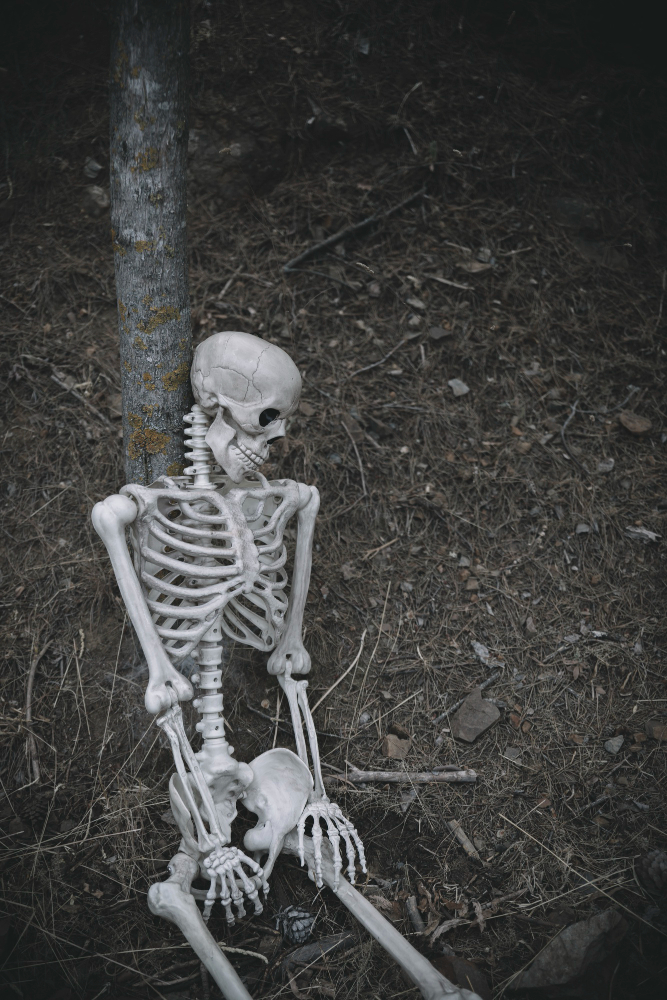

Mais de 40 esqueletos humanos são encontrados durante obra no Maranhão
Ossadas de 43 pessoas foram localizadas durante escavações da construtora MRV em São Luís, no Maranhão

Partes do Esqueleto Humano
- Osso Frontal
- Osso Zigomático
- Mandibula
- Clavícula
- Omoplata
- Úmero
- Rádio
- Ulna
- Ossos do Carpo
- Metacarpos
- Falanges
- Fêmur
- Tíbia
- Órbita
- Maxilar
- Espinha Cervical
- Acrômio
- Processo Coracóide
- Esterno
- Costelas
- Lombar
- Ílio
- Sacro
- Púbis
- Ísquio
- Sínfise Pública
- Patela
Sítios Arqueológicos mais espetaculares do mundo
- Angkor Wat, Camboja
- Machu Picchu, Peru
- Luxor, Egito
- Delfos, Grécia
- Pompéia, Itália
- Tikal, Guatemala
- Petra, Jordânia
- Masada, Israel
- Afrasiab, Uzbequistão
- Éfeso, Turquia